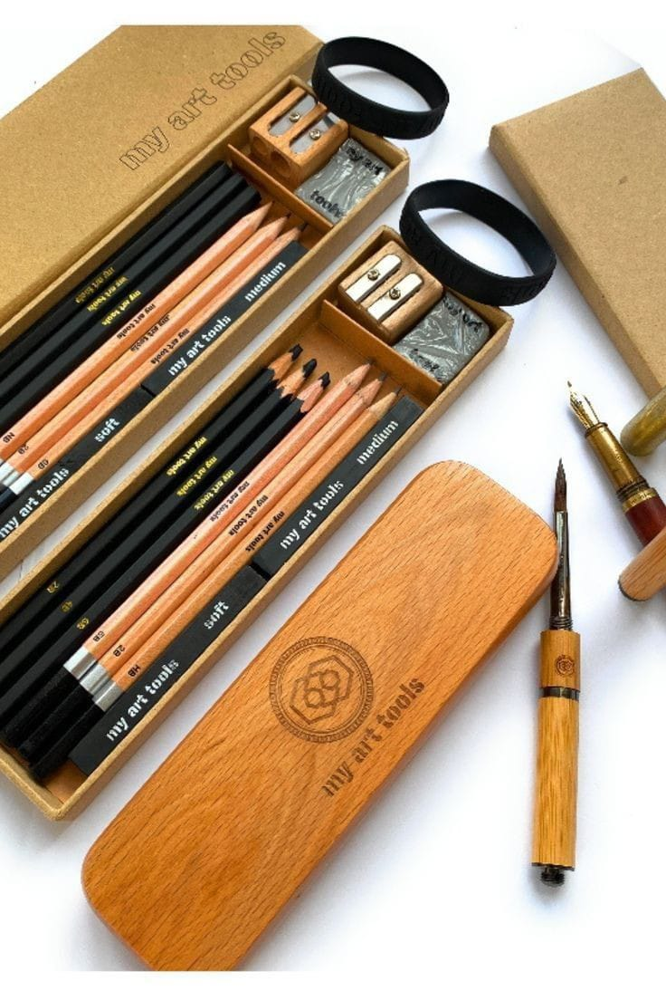

¿Qué es el dibujo?

El dibujo es el arte y técnica de dibujar. Mediante el acto de dibujar, queda plasmada una imagen, sobre un papel, lienzo o cualquier otro material, haciendo uso de diferentes técnicas. El dibujo es una forma de expresión gráfica en un plano horizontal, o sea en dos dimensiones. Es también una de las artes visuales. A lo largo de los años la humanidad lo ha utilizado como una forma de expresión universal y también de transmisión de la cultura, el lenguaje y demás. El dibujo sirve de herramienta expresión de los pensamientos o de los objetos reales, cuando hay cosas que las palabras no pueden explicar se dice que es mejor dibujar. Siempre el artista realiza un trabajo mental previo a plasmar sus ideas, en donde mezcla ideas, sentimientos, recuerdos u otros para obtener el acabado final.
Tipos de dibujo

Artístico. En este tipo de dibujo se expresan las ideas del artista, haciendo uso de diferentes técnicas, como la perspectiva, e incluso de materiales, ya que existe una extensa variedad de lápices y otros elementos para dibujar, como el carboncillo. Técnico. Este segundo tipo es utilizado para hacer representaciones de diferentes cosas, por ejemplo planos de arquitectura o dibujos topográficos. En el dibujo técnico la principal intención es representar de la mejor forma posible, de la más exacta, las dimensiones y la forma de un objeto determinado. Es la clase de dibujo que utilizan los profesionales en su trabajo (ingenieros, arquitectos, geólogos, etcétera). A su vez, el dibujo técnico tiene cuatro clasificaciones: natural, continuo, industrial y definido. De acuerdo con el objeto del dibujo, puede clasificarse en: Dibujo de concepción Dibujo de definición Dibujo de fabricación Dibujo industrial Muchos artistas afirman que no es importante tener una gran habilidad para ser justamente dibujante o pintor, sino que lo más importante es la capacidad de expresión.
Herramientas para dibujar
Instrumentos. Comprende todos los artefactos que trazan las líneas y también aquellos que permiten hacerlas, así como los lápices de grafito y las reglas. Tintas. Son los pigmentos y los colores que el artista utiliza para dar más cuerpo a su obra. Pueden aplicarse con ayuda de instrumentos secos, como los lápices, o húmedos, como los marcadores. Soporte. Todos elemento que ayude a sostener el papel o sobre el que se dibuje, como un lienzo.